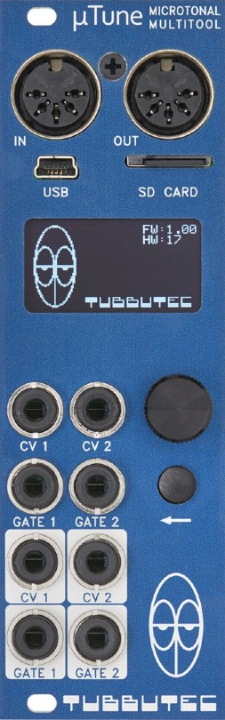

Eurorack Pitch Quantizer Module Comparison
Martin Doudoroff
This is a pretty exhaustive and up-to-date basic comparison of all your pitch quantizer module options for Eurorack. Some additional tools of potential interest are listed at the bottom.
Related discussion thread: Eurorack pitch quantizer comparison (ModWiggler forum)
Latest
2024-04-09 added dnipro qTone
2023-06-30 added Tenderfoot QQ2
2023-05-01 updates and corrections
2022-04-09 added Ladik Q-040 and Blue Lantern Quad Mk2
2022-01-20 added Flame Tame Machine (historical)
2022-01-19 added Bastl 1983
2020-10-31 added Monome Crow and Der Mann mit der Maschine DROID
2020-02-19 added Shakmat Bard Quartet
2020-02-19 added Tenderfoot Quad Quantizer
2019-10-22 added Kassutronics Quantizer
2019-09-29 errata
2019-09-29 added Mungo w0
2019-09-26 added more performance data from producers
2019-09-25 errata
2019-09-24 reworked transposition column, errata, first stab at accuracy column
2019-09-23 rough draft
Show full revision history
Notes
The Channels column is the number of input voltages the unit will quantize for you. The Derived Parts describes the additional outputs that some units will create for you (intervals, chords, arpeggios, etc.)
The Nominal accuracy column is a simple calculation of the resolution of the DAC against the output range of the quantizer. There are many other factors that may relate to the accuracy of a quantizer, but this is a baseline. Note that a cent is 0.83 millivolts, so quantizers above that value lack the resolution to be accurate within a cent.
As with all sophisticated modules, the devil is in the details. In particular, how each of these work is beyond the scope of this comparison, but critical for your workflow. All this comparison can do is help you survey the options and identify the modules you need to research more carefully. (You may find that some of these modules are pretty whacky.)
If you’re looking for microtonal quantization, use your browser’s search feature (usually command+f/ctrl+f) to find “micro” on this page.
| Product | Shipping | DAC resolution / nominal accuracy | Channels | Derived Parts | Triggered Quantization | Trigger Ouput | Input range | Output range | Scales | Transposition | Approx. Price (USD) | Additional Notes | |
|---|---|---|---|---|---|---|---|---|---|---|---|---|---|
| 2hp Tune 2016 2 HP Modular Grid > Web site > |
 |
Yes | ??? | 1 | No | No | 0 to +5v | 0 to +5v | 8 preset | Dedicated | 100 | ||
| ADDAC 207 Intuitive Quantizer 2012 10 HP Modular Grid > Web site > |
Yes | ??? | 4 | three intervals | Yes | Yes | -5v to +5v | 0 to +10v | 7 basic scales with pure, equal, Bohlen-Pierce, Just or “exotic” temperament; active notes are directly editable/playable with keyboard-style buttons; v/o scaling enables 24-note and 48-note microtonal scales, etc. | (default) CV option | 430 |
|
|
| ACL Sinfonion 2018 42 HP Modular Grid > Web site > |
Yes | 16-bit: within 0.15 millivolts (less than one cent) |
5 | four-part chord generation, arpeggiator | Yes, with delay comp | Yes | -10.24v to +10.24v | -2v to +8v | comprehensive modes and scales with equal temperament, just intonation, or quarter comma meantime; active notes are directly editable/playable with dedicated buttons for each channel | Dedicated | 1000 |
|
|
| Bastl 1983 2018 7 HP Modular Grid > Web site > |
Yes | ??? | 4 | Yes | equal temperament and just intonation, with some low level micro-tuning capabilities (see documentation); available notes can be set by MIDI | 290 |
|
||||||
| Blue Lantern Quad Quantizer Mk2 2020 6 HP Modular Grid > Web site > |
Yes | ??? | Yes (only) | 0 to +10v | 0 to +5v | 9 preset scales | 120 |
|
|||||
| Der Mann mit der Maschine DROID 2020 8 HP Modular Grid > Web site > |
 |
Yes | 16-bit: within 0.31 millivolts (less than one cent) |
8 | Yes | Yes | Yes | -10v to +10v | -10v to +10v | implements twelve degrees out of the box | CV option | 420 |
|
| Dnipro qTone 2024 6 HP Web site > |
No | ??? | 2 | No | Yes | No | -5v to +5v | -5v to +5v | 12TET, 16 user-defined scales (automatically saved) | CV option | 220 |
|
|
| Doepfer A-156 Dual Quantizer 2012 8 HP Modular Grid > Web site > |
 |
Yes | 8-bit: within 39.06 millivolts (beware) |
2 | Yes | Yes | 0 to +10v | 0 to +10v | ~27 possible scales | Dedicated | 160 | ||
| Erica Synths Pico Quant 2018 3 HP Modular Grid > Web site > |
 |
Yes | 12-bit: within 2.44 millivolts (within a few cents) |
1 | Yes | Yes | 0 to +10v | 0v to 10v | 8 preset scales editable with web interface; includes support for quarter tone (microtonal) scales | No | 135 |
|
|
| Expert Sleepers Disting (various editions) 2014 4 HP Modular Grid > Web site > |
 |
Yes | 24-bit: within 0.01 millivolts (less than one cent) |
1 | Yes, with delay comp | Yes | -10v to +10v | -10v to +10v | fifteen basic scales by default; can load user-configured scala files (including microtonal); available notes can be set by MIDI | Dedicated | 190 |
|
|
| Flame Chord Machine 2 2017 12 HP Modular Grid > Web site > |
Yes | 12-bit: within 2.44 millivolts (within a few cents) |
1 | four part chord and one arpeggio | Yes | Yes | 0 to +10v | 0 to +10v | huge list of scales; active notes set manually with keyboard-style buttons (?) | (default) CV option | 370 |
|
|
| Flame Tame Machine 2010 14 HP Modular Grid > Web site > |
Discontinued | ??? | 1 | Yes | No | 0 to +4.8v | 0 to +5v | 28 presets and seven user slots | Dedicated CV or manual | 350 |
|
||
| Industrial Music Electronics Argos Bleak 2017 15 HP Modular Grid > Web site > |
Yes | 12-bit: within 1.95 millivolts (within a few cents) |
2 | two intervals | Yes | Yes | 0v to +8v | ??? | 15 basic scales | CV option | 470 |
|
|
| Instruo Harmonaig 2017 18 HP Modular Grid > Web site > |
 |
Yes | 16-bit: within 0.31 millivolts (less than one cent) |
1 | third, fifth and seventh (chord) | No | Yes | -10v to +10v | -10v to +10v | 14 ionion and harmonic minor modes; active notes directly editable/playable with playable keyboard-style buttons | It’s complicated | 335 |
|
| Instruo Quad Performance Quantizer 2017 10 HP Modular Grid > |
Discontinued | ??? | 4 | No | Yes | ??? | ??? | available notes set by MIDI | No | 620 | |||
| Intellijel Scales 2019 8 HP Modular Grid > Web site > |
 |
Yes | 16-bit: within 0.31 millivolts (less than one cent) |
2 | one interval | Yes, with delay comp | Yes | -10v to +10v | -10v to +10v | 35 scales arranged in banks, directly editable/playable with playable keyboard-style buttons | CV option | 290 |
|
| Intellijel uScale 2 2012 6 HP Modular Grid > |
 |
Discontinued | 16-bit: within 0.15 millivolts (less than one cent) |
1 | one interval | No | No | 0 to +10v | 0 to +10v | up to 144 user scales defined in banks with the playable keyboard-style buttons | CV option | 230 |
|
| Kassutronics Quantizer 2019 10 HP Modular Grid > Web site > |
Yes (DIY/builder) | no DAC employed | 2 | Yes, with delay comp | Yes | -5.33v to +5.33v | -5.33v to +5.33v | defined with the playable bracelet-style buttons | CV option | TBD |
|
||
| Ladik Q-010 Easy Quantizer 2014 4 HP Modular Grid > Web site > |
Yes | ??? | 1 | No | No | 0 to +5v | 0 to +5v | sixteen basic scales | Dedicated | 75 |
|
||
| Ladik Q-040 Quad Quantizer 2021 4 HP Modular Grid > Web site > |
Yes | ??? | 4 | No | No | 0 to +5v | 0 to +5v | semitones | 70 |
|
|||
| Monome Crow 2019 2 HP Modular Grid > Web site > |
Yes | 16-bit: within 0.23 millivolts (less than one cent) |
2 | four (whatever you script up) | Yes | Yes | -5v to 10v | -5v to 10v | any scale can be scripted (including microtonal) | CV option | 200 |
|
|
| Monome Teletype 2015 18 HP Modular Grid > Web site > |
 |
Yes | 14-bit: within 0.61 millivolts (less than one cent) |
1 | four (whatever you script up) | Yes | Yes | 0 to +10v | 0 to +10v | any scale can be scripted (including microtonal) | No (requires expander) | 480 |
|
| Mungo w0 2013 12 HP Modular Grid > Web site > |
Yes | 20-bit: within 0.02 millivolts (less than one cent) |
1 | No | No | -10v to +10v | -9.5v to +9.5v | user-defined, arbitrary scales, including microtonal and non-uniform | No | 500 |
|
||
| Ornament & Crime 2016 14 HP Modular Grid > Web site > |
Yes (DIY/builder) | 16-bit: within 0.15 millivolts (less than one cent) |
2 or 4 depending on mode | ASR, chords, or neo-Riemannian transformations depending on mode | Yes, with delay comp | Yes, depending on mode | -3.5v to +6.5v | -3v to +6v | 100+ baked in scales (editable in UI) including microtonal | Yes, depending on mode | 300 |
|
|
| Shakmat Bard Quartet 2020 10 HP Modular Grid > Web site > |
Yes | 16-bit: within 0.15 millivolts (less than one cent) |
4 | Yes | Yes (shared/assignable) | -3v to +7v | -3v to +7v | Active semi-tones are selected with playable keyboard-style buttons; available notes can be set by MIDI (with expander) | Yes, pre- or post-quantization (selectable) | 390 |
|
||
| Sonic Potions Penrose 2015 6 HP Modular Grid > Web site > |
 |
Yes (DIY) | 8-bit: within 39.06 millivolts (beware) |
1 | Yes | Yes | 0 to +10v | 0 to +10v | Active semi-tones are selected with playable keyboard-style buttons | No | 95 | ||
| Synthesis Technology E102 Quad Temporal Shifter 2012 14 HP Modular Grid > Web site > |
Discontinued | 14-bit: within 0.61 millivolts (less than one cent) |
1 | 3 time shifted outputs (shift register) | Yes | No | -6v to +6v | -6v to +6v | Chromatic | No | 300 |
|
|
| Tenderfoot Quad Quantizer 2019 12 HP Modular Grid > Web site > |
Yes | 12-bit: within 2.44 millivolts (within a few cents) |
4 | Yes | Yes | -3v to +7v | -3v to +7v | 12 baked in scales, ephemeral user scale | Dedicated | 215 |
|
||
| Tenderfoot QQ2 2023 12 HP Modular Grid > Web site > |
Yes | ??? | 4 | Yes | Yes | -3v to 7v | -3v to +7v | 44 baked in scales, edit at any time (ephemeral) | Yes, pre- or post-quantization | 310 |
|
||
| TipTop QuantiZer 2018 10 HP Modular Grid > Web site > |
Yes | 16-bit: within 0.08 millivolts (less than one cent) |
1 | Yes | No | 0 to +5v, 0 to +10v, or -5v to +5v (selectable) | 0 to +5v | Major, minor plus 24 semi-tone-based user scale (defined with keyboard-style buttons) | CV option | 299 |
|
||
| Toppobrillo Quantimator 2012 8 HP Modular Grid > Web site > |
 |
Discontinued | 12-bit: within 1.22 millivolts (within a few cents) |
1 | 2 (triad/chord or shift register) | Yes | Yes | 0 to +5v | 0 to +5v | 32 scales | Dedicated | 230 | |
| Tubbutec uTune 2017 8 HP Modular Grid > Web site > |
 | Yes | 16-bit: within 0.15 millivolts (less than one cent) |
2 | Yes | Yes | 0 to +10v | 0 to +10v | microtonal scale editor built-in | CV option | 300 |
|
|
| WMD Arpitecht 2017 12 HP Modular Grid > Web site > |
Yes | 14-bit: within 0.43 millivolts (less than one cent) |
1 | Yes | Yes | 0v to +5v | -1v to +6v | 16 scales; active notes selected via note mask selection | Dedicated | 300 |
|
{kind=link}
{kind=link}
{kind=link}
{kind=link}
{kind=link}
{kind=link}
{kind=link}
{kind=link}
{kind=link}
{kind=link}
{kind=link}
{kind=link}
{kind=link}
{kind=link}
{kind=link}
{kind=link}
{kind=link}
{kind=link}
{kind=link}
{kind=link}
{kind=link}
{kind=link}
In addition, these modules don’t really belong in the above comparison but have been pointed out as being of potential interest:
- Cycle Instruments Tetrachord (four part arp/chord melody mill with sophisticated macro and cv control)
- Elektrofon Klang (four part chord generator)
- Qu-bit Chord (chord-generating quad-oscillator with parametric front-end)
- Qu-bit Chord 2 (chord-generating quad-oscillator with parametric front-end)
- Flame 4VOX (chord-generating quad sequencer)
- Mutable Instrument Plaits (oscillator with chord generator)
- Mutable Instrument Braids (oscillator with chord generator)
- Bastl Instruments Popcorn (sequencer that can be used as a quantizer)
- Mutable Instruments Marbles (random source that can be quantized to a user-supplied voltage table)
- 2hp Arp (arpeggio generator)
- Klavis Caltrans (pitch manager)
- Alyseium Q-Linear (pitch manager)
- Bastl Instruments 1983 (pitch manager/MIDI interface)
- Mazzatron KEYS-1 Keyboard Quantizer (transposer)
- Doepfer A-173-1 and -2 (transposer)
• • •